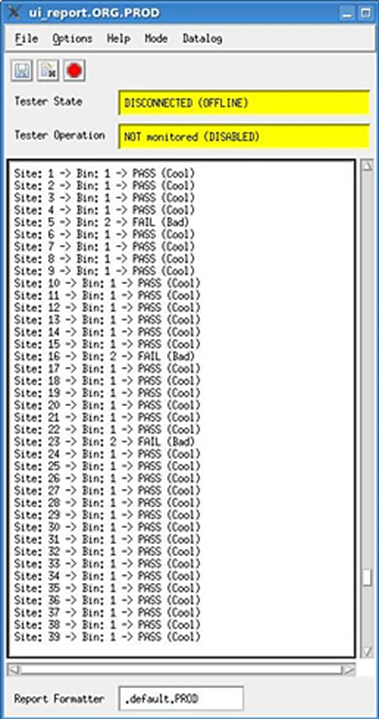
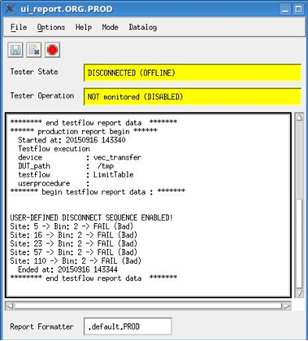
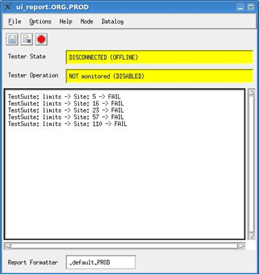

Configuring the messages printed in the Report Window
You can configure the messages that get printed in the Report Window when you manually execute a testflow, a test suite, or run configuration.
Controlling the messages printed in the Report Window
- Add a configuration file into the testflow directiory of your device as follows: <DeviceDirectory>/testflow/.testflow.ReportUiOutput.user_def
- In this configuration file, specify the required configuration. For instance:
-
<passed>Site: %site Bin: %bin PASSThis will print the line content behind the <passed> tag in the Report Window for passed sites only.
<failed>Site: %site Bin: %bin FAILThis will print the line content behind the <failed> tag in the Report Window for failed sites only.
<text> abcdThis will print the line content behind the <text> tag in Report window for all sites.
Note- The line content can be text, site information (number), software bin information (number),
and test suite information (name). For example:
- %site prints the respective site number in the message
- %bin prints the respective software bin number in the message
- %testSuiteName prints the respective test suite name in the message
- If the line does not start with one of the tags: <passed>, <failed>, or <text>, SmarTest will not print it in the Report Window.
- To comment out a line, add a "#" before the <passed>, <failed>, or <text> tags.
-
-
Note
- If this file does not exist in your testflow directory, SmarTest will print its standard messages in the Report Window.
- If this file exists in your testflow directory but it is empty, SmarTest will print no messages in the Report Window.
Examples
Printing messages for passed and failed sites in the Report Window
This example shows how you can configure the .testflow.ReportUiOutput.user_def file to print messages in the Report Window for all passed and failed sites after a testflow is executed:
<passed>Site: %site -> Bin: %bin -> PASS (Cool) <failed>Site: %site -> Bin: %bin -> FAIL (Bad) #<text> This is an example for a commented line (using "#" at the beginning)
The messages that are printed in the Report Window are as in the following figure:

Printing messages for failed sites only in the Report Window
This example shows how you can configure the .testflow.ReportUiOutput.user_def so that only messages for the failed sites are printed in the Report Window:
<failed>Site : %site -> Bin: %bin -> FAIL (Bad)

Printing messages in the Report Window for the failed sites after a test suite is executed
This example shows how you can configure your .testflow.ReportUiOutput.user_def file to print a message in the Report Window for the failed sites after a test suite is executed:
<failed>TestSuite: %testSuiteName -> Site: %site -> FAIL

Functional changes
- Introduced in SmarTest 7.4.3